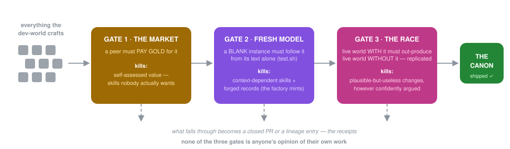

Rung 03 — run your work inside one
This repository maintains and improves itself.
dark-factory: on a schedule — or whenever an issue is filed — a team of AI agents convenes inside a game, works out what this repo needs, builds the change, and ships it through CI/CD. No human is in the loop. What stops it shipping garbage is not trust in the AI: it’s three independent gates, ending in a controlled experiment.
Get it on GitHub →git clone https://github.com/sancovp/dark-factory && cd dark-factory
pip install -r requirements.txt # cave-teams (pinned) + heaven-framework
# keyless sanity check — the whole stack imports and composes
python -c "from factory import run_cycle; print('composes')"
# one full cycle, locally (the worlds are AI-driven — needs a MiniMax key)
MINIMAX_API_KEY=… HEAVEN_DATA_DIR=/tmp/heaven-data python -m factory.run_cycleHow it works
What happens in one cycle, end to end.
A cycle fires from the daily cron, a manual dispatch, or automatically when a GitHub Issue is opened. The agents play World of Skillcraft — they craft skills (real files), test them, and sell them to each other on a trade board; a deity referees. Why a game? Because the market and the deity create selection pressure — the game manufactures honest signals about which skills matter.
The live world plays
A WoS world boots on the current package and the agents just play. The result is telemetry: that number — the economy’s throughput — is the fitness of the current version of this repo.
The dev-world convenes
They craft candidate skills, test them, argue about them via the market, and buy the ones they believe in. The skill economy is the R&D lab.
The skill is applied
The factory picks the skill a peer actually bought (the market’s vote — self-praise is worth nothing) and the buyer executes its procedure against a checkout of the repo. The diff that falls out is the proposed change.
The gate
Three mechanical checks, no opinions. Failure at the gate = the change dies, the cause is logged, and it becomes the signal for the next cycle.
The race
Two live worlds boot, identical in every way except one: treatment on the patched package, control on the current one. A controlled experiment — an A/B test with one variable — so the comparison is causal. Replicated, decided by strict majority.
Ship or receipt
Strict win → it merges its own PR. Tie or loss → the PR is closed with the verdict as a comment. Merged PRs are proven improvements; closed PRs are the graveyard of plausible ideas that didn’t survive measurement.
The deity’s retrospective
The lessons distil into the standing rulebook, injected into every future briefing. Skills accumulate in the loadout; lessons accumulate in the rules — the way they develop improves, not just what they’ve developed.
The part that replaces human review
Why three gates.
Each gate kills a different failure mode. None of the three gates is anyone’s opinion of their own work.

A peer paid gold
Kills: skills nobody actually wants — self-assessed value.
A blank instance must follow the skill from its text alone
Kills: skills that only “work” with their author’s context in the room — and forged test records, since the factory mints its own.
The live world with the change must out-produce the one without
Kills: changes that are plausible, well-argued, and useless — or harmful. The AI that proposed the change can be confidently wrong; the experiment doesn’t care.
The design bet, in one line: you don’t need the proposer to be right — you need the selection structure to be sound.
The stack running all of this
cave-teams: programmable, leader-driven agent teams.
cave-teams provides the world as a composable object (SkillcraftWorld — the WoS economy ported rule-for-rule from the original game, every guard intact) plus the race machinery (racetrack, Championship). heaven-framework provides the agents themselves — AI processes with Bash and file-editing tools, so when an agent “crafts a skill” a real file appears on disk. Both install with pip; the whole thing runs inside GitHub Actions.
The task arrives as a file in the team’s session dir; the leader checks it.
The leader — an intelligent autonomous dovetail — writes a message to a teammate (often just “read {path}”).
cave-teams does not blindly run the next thing. It checks the message against the guardrails; if it’s wrong, it re-prompts the leader with the error — and the LLM fixes itself. If it’s right, it delivers it; the teammate runs; the leader is alerted.
The leader decides the next message, or ends the run and returns a report.
Compose teammates with a tiny algebra — seq, par, gate, choice — and a team is a teammate (the closure law). Topologies are also configs and classes. pip install cave-teams pulls cave-harness (the CAVE runtime) + pydantic. MIT.
Receipts, not testimonials
Don’t take my word for it — take the code.
This is the easiest rung on the ladder to check, because you can simply run it. Both repos are public and MIT, the install is a clone command, and the factory’s whole verdict history ships in the repo.
dark-factory
The self-maintaining repository. The agents, economy, deity, gates, and race are all library code; this repo is just a world plus a schedule.
github.com/sancovp/dark-factory →cave-teams
Programmable, leader-driven agent teams on CAVE. Each team makes an ephemeral CAVE server that hosts the agents, runs them, and serves the flow, then tears it down.
github.com/sancovp/cave-teams →Every verdict ever rendered
The repo’s history is the permanent record, and LINEAGE.json is the machine-readable log of every verdict — ships and reverts alike.
Open LINEAGE.json →The engine, live in your browser
The same ecosystem’s explainer engine, drawing its own explanation while you scroll. No install needed to look at it.
Watch it run →What it costs
Free. It is open source.
A contractor building this same set of components for you would quote a project rate against it. This rung has no price at all — it is deliberately the free one, and there is no gated tier hiding inside it.
Free· open source
- dark-factory — the self-maintaining repository: the agents, economy, deity, gates, and race, plus the kill switch
- cave-teams — the team library underneath; pip install cave-teams
- The golden set — shipped, experiment-proven skills, equippable by any Claude Code session
- It runs on your machine against your own provider key; nothing is routed through us
- No account, no email capture, no waitlist, no usage tier
Ship something that runs in your first session — or bring it to a build call.
If your first session does not produce a working tool, bring it to a call and we will stand it up with you. The software is free either way, so there is nothing here to refund and nothing to cancel — this is a promise about our time, not about your money.
Want the same engine pointed at your business rather than at your code? That is rung 4, built with you, from $1,000/mo. Every price on the ladder sits on one page.
Straight terms
What you’re buying, honestly.
Nothing — which makes this the easy one to be straight about. The trade is your time, not your money. The worlds are AI-driven — running a cycle needs a MiniMax key in the environment, and the autonomous loop runs inside GitHub Actions. If you are not comfortable with that, this rung is simply not the one for you yet, and rung 4 exists precisely because not everyone wants to be the person running it.
The factory is contained, not trusted. It can write world/, .claude/skills/, and LINEAGE.json — nothing else. It cannot modify its own code or workflow. And FACTORY_ON is the kill switch: delete that file and autonomous cycles stop.
The worlds are noisy, and the design says so out loud. Because AI-driven worlds are noisy, the race is replicated and decided by strict majority. A tie never ships — change has a cost, and a coin-flip is not evidence. The verdict history, including every closed PR, is public in the repo; read it before you trust it.
Where this sits
Five rungs. You are standing on the third.
Install it
You don’t need the proposer to be right — you need the selection structure to be sound.
The agents, economy, deity, gates, and race are all library code; this repo is just a world plus a schedule. Fork it and open an issue.
Get it on GitHub →